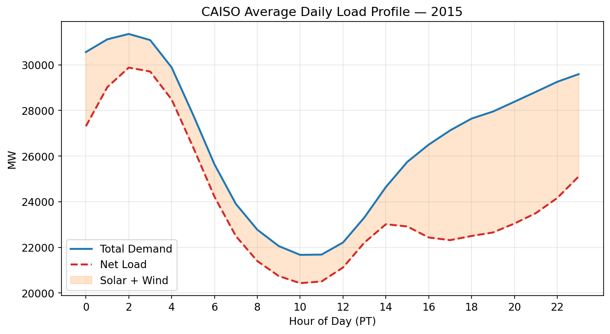
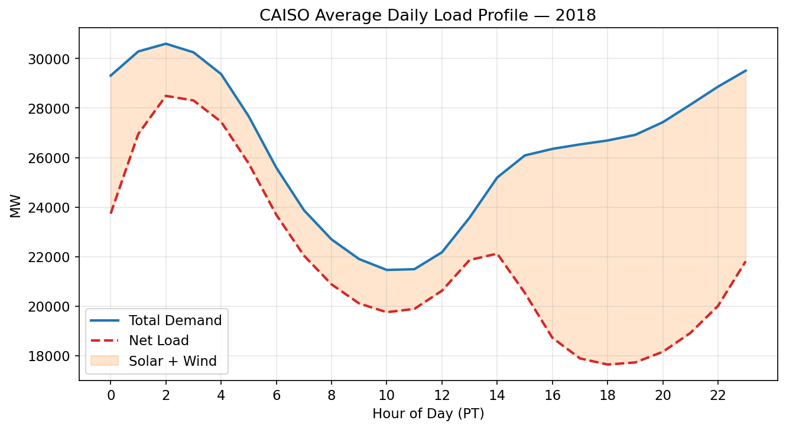
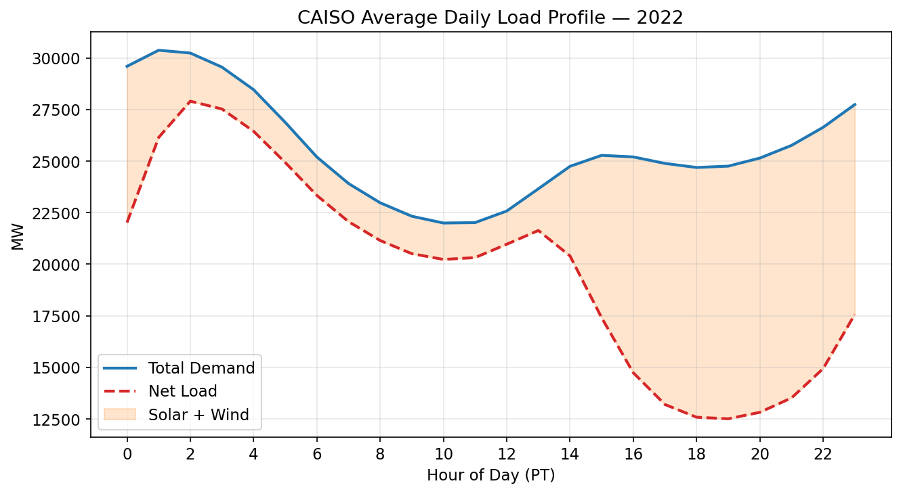

08 · Time-Series Decomposition — Duck Curve Evolution#
Assigns ZIP adoption cohorts and plots 24-hour net-load profiles for snapshot years.
import sys
from pathlib import Path
ROOT = Path().resolve().parent
sys.path.insert(0, str(ROOT / 'src'))
PROC = ROOT / 'data' / 'processed'
RAW = ROOT / 'data' / 'raw'
FIGS = ROOT / 'output' / 'figures'
FIGS.mkdir(parents=True, exist_ok=True)
import pandas as pd
import numpy as np
import matplotlib.pyplot as plt
plt.rcParams.update({'figure.dpi': 150, 'font.size': 11})
8.1 Cohort Assignment#
# First install year per ZIP from DGStats panel
dg_panel = pd.read_parquet(PROC / 'dgstats_panel.parquet')
if 'install_year' in dg_panel.columns:
dg_panel = dg_panel.rename(columns={'install_year': 'year'})
first_year = dg_panel[dg_panel['annual_capacity_kw'] > 0].groupby('zip_code')['year'].min()
def assign_cohort(y):
if y == 2015: return 'Cohort 1 (2015)'
elif y <= 2017: return 'Cohort 2 (2016-17)'
elif y <= 2020: return 'Cohort 3 (2018-20)'
else: return 'Cohort 4 (2021+)'
zip_cohort = first_year.map(assign_cohort).reset_index()
zip_cohort.columns = ['zip_code', 'cohort']
# Control: ZIPs with <5 total installs
total_installs = dg_panel.groupby('zip_code')['install_count'].sum()
control_zips = total_installs[total_installs < 5].index
zip_cohort.loc[zip_cohort['zip_code'].isin(control_zips), 'cohort'] = 'Control (<5 installs)'
print(zip_cohort['cohort'].value_counts())
cohort
Cohort 1 (2015) 1277
Control (<5 installs) 242
Cohort 2 (2016-17) 78
Cohort 3 (2018-20) 13
Cohort 4 (2021+) 8
Name: count, dtype: int64
8.2 24-Hour Net-Load Profiles by Cohort#
# Load CAISO hourly data (raw shard — ~35 days/year, enough for avg daily profile)
caiso = pd.read_parquet(RAW / 'caiso_shards' / 'caiso_hourly_merged.parquet')
caiso['interval_start_utc'] = pd.to_datetime(caiso['interval_start_utc'], utc=True)
caiso['hour'] = caiso['interval_start_utc'].dt.hour
caiso['year'] = caiso['interval_start_utc'].dt.year
for col in ['solar_mw', 'wind_mw', 'demand_mw']:
if col not in caiso.columns:
caiso[col] = 0.0
caiso['net_load_mw'] = caiso['demand_mw'] - caiso['solar_mw'] - caiso['wind_mw']
SNAPSHOT_YEARS = [2015, 2018, 2022]
COHORT_COLORS = {
'Cohort 1 (2015)': '#1f77b4',
'Cohort 2 (2016-17)': '#ff7f0e',
'Cohort 3 (2018-20)': '#2ca02c',
'Cohort 4 (2021+)': '#d62728',
'Control (<5 installs)': '#9467bd',
}
# CAISO data is system-level — plot the same profile for each snapshot year
# Cohort-level net-load would require distribution-level data; here we show
# the system duck curve and annotate with the cohort's cumulative capacity share.
for yr in SNAPSHOT_YEARS:
yr_data = caiso[caiso['year'] == yr]
if len(yr_data) == 0:
print(f'No CAISO data for {yr}')
continue
hourly_avg = yr_data.groupby('hour')[['net_load_mw', 'solar_mw', 'wind_mw', 'demand_mw']].mean()
fig, ax = plt.subplots(figsize=(9, 5))
ax.plot(hourly_avg.index, hourly_avg['demand_mw'], label='Total Demand', color='#1f77b4', linewidth=2)
ax.plot(hourly_avg.index, hourly_avg['net_load_mw'], label='Net Load', color='#d62728', linewidth=2, linestyle='--')
ax.fill_between(hourly_avg.index, hourly_avg['net_load_mw'], hourly_avg['demand_mw'],
alpha=0.2, label='Solar + Wind', color='#ff7f0e')
ax.set_xlabel('Hour of Day (PT)')
ax.set_ylabel('MW')
ax.set_title(f'CAISO Average Daily Load Profile — {yr}')
ax.set_xticks(range(0, 24, 2))
ax.legend()
ax.grid(alpha=0.3)
plt.tight_layout()
fig.savefig(FIGS / f'duck_curve_{yr}.png', dpi=300, bbox_inches='tight')
fig.savefig(FIGS / f'duck_curve_{yr}.pdf', bbox_inches='tight')
plt.show()
print(f'Saved duck_curve_{yr}.png')

Saved duck_curve_2015.png

Saved duck_curve_2018.png

Saved duck_curve_2022.png